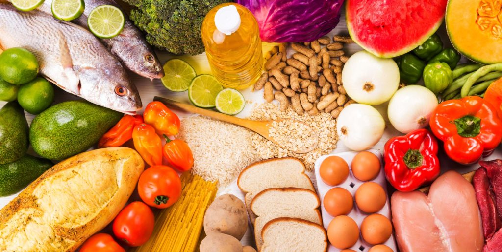

Outros métodos de conservação de alimentos estão sendo pesquisados por cientistas da área de tecnologia de alimentos, visando aprimorar a conservação dos produtos alimentícios.
A atual demanda do consumidor moderno por alimentos minimamente processados (a frio e a quente, mais frescos, mais saudáveis por menores teores de sal, açúcar e gordura, mais convenientes de utilizar, mais seguros, de maior qualidade em termos de sabor, textura e aparência, e mais naturais por ausência de aditivos) tem enormes implicações relativamente ao modo como são encarados os métodos tradicionais de processamento, bem como comporta grandes desafios à indústria alimentar que pretenda compatibilizar esses requisitos com um nível elevado de segurança alimentar.
O desejo do consumidor por alimentos minimamente preservados e processados tem encorajado o desenvolvimento de novos métodos para a inativação de microrganismos em alimentos. Enquanto que a eficácia de muitos desses métodos já foi, há muito, demonstrada, os avanços tecnológicos só agora começam a tornar possível a sua exploração comercial aplicada à preservação de alimentos.
Novas técnicas estão sendo desenvolvidas e/ou aperfeiçoadas, e, em geral, têm mostrado resultados surpreendentes, principalmente para produtos naturais que não sofrem alterações significativas quando comparadas com métodos térmicos convencionais. Estas novas técnicas - a maioria ainda em fase experimental - deverão trazer certa tranqüilidade às exigências atuais. Os alimentos deverão ser processados, por exemplo, através de choques térmicos, ultra-som, impulso elétrico, campos magnéticos e altas pressões.
Um amplo número de métodos de processamento e de estocagem tem sido desenvolvido para controlar diversos fatores que promovem a deterioração dos alimentos. O uso do aquecimento no branqueamento, pasteurização ou cozimento é bem estabelecido, no entanto, os processos térmicos podem causar diminuição na qualidade sensorial ou nutricional dos alimentos. Tradicionalmente, os métodos que não empregam aquecimento na preservação de alimentos incluem estocagem à baixa temperatura, remoção de água, fermentação e adição de ácidos, açúcares, sais e conservantes químicos. Com exceção ao abaixamento da temperatura e à adição de conservantes químicos, os outros procedimentos acarretam mudanças nas características sensoriais dos alimentos.
Por outro lado, novos métodos para processamento e estocagem, principalmente de frutas e hortaliças, estão sendo desenvolvidos e empregados na indústria alimentícia. Estes métodos apresentam uma vantagem a mais, que é a manutenção das características originais, tanto sensoriais quanto nutricionais, dos alimentos. Estes novos sistemas incluem uso de bacteriocinas ou enzimas antimicrobianas, campo elétrico pulsado de alta intensidade, luz pulsante de alta intensidade, ultrassom e alta pressão hidrostática, sendo que alguns destes sistemas já possuem aprovação regulamentada e são empregados na indústria, como é o caso da radiação gama, emitida por cobalto-60, usado no controle da carga microbiana de vegetais e carnes de aves, ou no controle do brotamento de batatas e cebolas.
Os métodos não-térmicos de processamento de alimentos (irradiação, pulso elétrico, alta pressão, micro-ondas) têm ganhado grande interesse ultimamente, devido ao grande potencial que oferecem como processos alternativos ou complementares aos métodos tradicionais de preservação. Na maioria dos métodos tradicionais de preservação, os alimentos são submetidos a altas temperaturas por certo período de tempo, causando muitas vezes alterações indesejáveis nos produtos, como modificações de cor, sabor e perdas funcionais ou nutritivas.
Novos processos atérmicos aplicados a alimentos, de que são exemplos a HHP (High Hydrostatic Pressure, High Pressure Processing – HPP, ou Ultra High Pressure – UHP), PEF (Pulsed Electric Fields) têm recebido recentemente atenção considerável, pela sua capacidade de inativar microrganismos à temperatura ambiente ou a temperaturas subletais, evitando simultaneamente os efeitos deletérios que o calor tem sobre o sabor, cor e valor nutricional dos alimentos.
Muitos destes processos, contudo, requerem intensidades muito altas de tratamento para atingirem destruição microbiana adequada em alimentos de baixa acidez.
A resistência de esporos ou a existência de subpopulações microbianas extremamente resistentes, adicionado ao elevado custo ou dispêndio de energia de algumas destas tecnologias emergentes, constituem fatores limitantes à sua eficácia e expansão de utilização no processamento alimentar.
Com os elevados níveis de intensidade de tratamento necessários para inativar um número significativo de microrganismos, certos processos atérmicos também podem afetar as propriedades sensoriais dos alimentos.